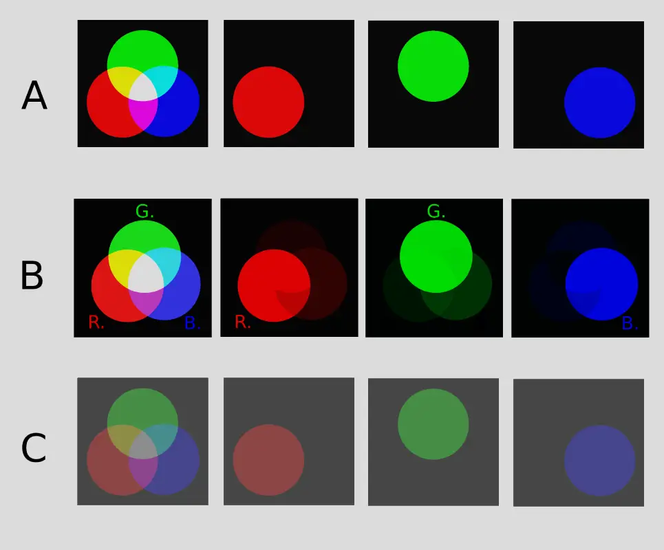
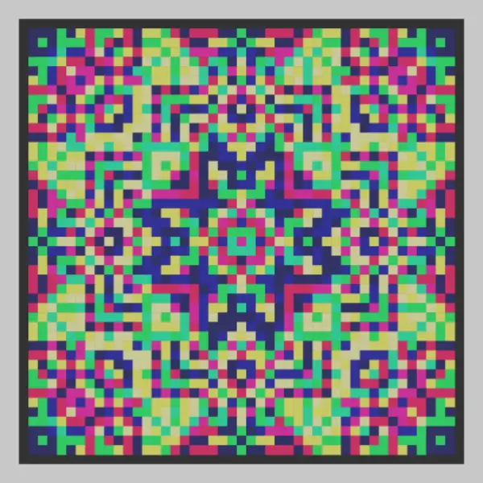

SPECTRAL CHANNEL INTEGRITY (SCI)
1. Концептуальное введение
Модель Spectral Channel Integrity (SCI) предназначена для сохранения структуры цветового сигнала при переходе между различными физическими средами — от экрана к печати и камере.
Основная проблема обычной печатной продукции — это межканальная интерференция (Crosstalk). SCI решает эту проблему с помощью детерминированной нормализации каналов. Это позволяет сохранять четкие пропорции между RGB-компонентами после печати.
Таким образом, цвет рассматривается не только как визуальное качество, но и как надежная, верифицируемая структура данных, пригодная для компьютерного зрения, многоканального оптического кодирования, калибровки оборудования и художественных проектов.
2. Проблема — межканальная интерференция (Crosstalk)
Субтрактивные пигменты обладают широкими перекрывающимися спектрами поглощения. При печати это вызывает взаимное влияние каналов, которое нарушает исходную структуру цвета — точные соотношения интенсивностей между RGB-каналами.
В результате на отпечатке искажается то, что в цифровом изображении определяет каждый цвет. Эта потеря структурной целостности является особенно критичной при независимом многоканальном кодировании данных, где точность пропорций между каналами необходима для надежного декодирования.

На рисунке 1. В системе "A" (RGB) каналы независимы и могут быть полностью разделены. После воспроизведения того же изображения на субтрактивном носителе стандартными методами "B" (CMYK) возникает межканальное перекрытие, из-за которого при спектральной сепарации каждый канал содержит интерференционные компоненты других каналов. После применения normalization "C" (SCI) амплитудный дисбаланс и базовые уровни выравниваются, что существенно уменьшает crosstalk и восстанавливает операционную независимость каналов.
ПОДРОБНО: Сферы применения перцепционного подхода и задачи модели SCI
Классическая модель ICC основана на колориметрии и оптимизирована для визуального соответствия изображений человеческому восприятию. Модель SCI расширяет этот подход, адаптируя управление цветом под задачи машинного зрения, спектрометрии и цифрового кодирования. Эти модели принципиально не конкурируют, так как предназначены для решения противоположных задач и не заменяют друг друга.
- Разделение целевых задач. Стандартные ICC-профили созданы для художественной и потребительской печати, где приоритетом являются визуальная эстетика и максимальный цветовой охват. Модель SCI сознательно ограничивает спектральный диапазон ради точности данных и непригодна для печати обычных изображений, так как лишает их привычной насыщенности.
- Математическая обратимость тракта. Перцепционные профили используют интерполяционные таблицы (LUT) для адаптации под зрение человека, что делает процесс кодирования-декодирования нелинейным и необратимым. SCI, напротив, обеспечивает строгое сохранение исходных математических пропорций сигнала.
- Стабильность спектрального отклика. Визуально метамерные цвета (одинаковые для человека) обладают разными физическими профилями отражения, что приводит к ошибкам при их регистрации матрицами камер. SCI стабилизирует спектральные характеристики, обеспечивая инвариантность данных для цифровых датчиков.
- Операциональная независимость каналов. Традиционные методы не компенсируют субтрактивное смешение пигментов. SCI минимизирует межканальную интерференцию (Crosstalk) на физическом уровне, сохраняя изолированность информационных слоев при многоканальном оптическом кодировании.
Итог. ICC-профили обеспечивают визуальное совершенство для человеческого глаза. Модель SCI осуществляет детерминированное приведение спектрального отклика сред к строгим физическим границам, трансформируя субтрактивную печатную среду в стабильный аналог аддитивной матрицы для систем автоматизированного анализа данных.
3. Математическая модель (механизм спектрального лимитирования)

ПОДРОБНО: Математический аппарат масштабирования
Амплитудное масштабирование
\(I_{raw}^{c}(\lambda)\) — исходная интенсивность отражения пигмента на длине волны \(\lambda\);
\(A_{max}(L)\) — максимальная физическая амплитуда выбранного спектрального ограничителя;
\(A_{max}(c)\) — максимальная амплитуда рассматриваемого пигмента.
Формирование общих опорных уровней
\(S_{in}\) — значение входного сигнала после амплитудного выравнивания;
\(U_{ref}\) — общий верхний референсный уровень системы;
\(L_{ref}\) — общий нижний референсный уровень системы.
Границы применимости модели
Модель не заменяет традиционные методы цветопередачи и не ограничивает использование насыщенных цветов в художественной и дизайнерской практике. Её задача — формирование воспроизводимой спектральной среды для приложений, в которых критически важно сохранение структуры и операциональной независимости RGB-каналов.
Подобно тому как камертон не заменяет музыку, а служит эталоном настройки, SCI не подменяет существующие цветовые пространства, а предоставляет инструмент для задач, требующих детерминированного разделения информационных каналов.
Области применения:
- компьютерное зрение и системы искусственного интеллекта;
- прецизионная калибровка оптических систем;
- многоканальное спектральное кодирование данных.
4. Аппаратная верификация и контроль структуры

SCI-маркеры, созданные в рамках модели, представляют собой оптические элементы, цветовые компоненты которых согласованы таким образом, чтобы минимизировать межканальную интерференцию (Crosstalk) и обеспечить воспроизводимое разделение RGB-каналов. Их чистая сепарация служит индикатором сохранности структуры цветового сигнала. Они располагаются рядом с оригиналом картины, после чего вся сцена фотографируется и репродуцируется. Измерительные элементы-SCI-маркеры печатаются так, чтобы на отпечатке полностью сохранились их свойства. Это гарантирует, что и все остальные цвета на репродукции сохранили исходную структуру и целостность цветового сигнала. Цветовые компоненты копии могут различаться в зависимости от использованного печатного оборудования и красителей, но при этом строго сохранят соотношения каналов и структуру цвета. Для наглядности на иллюстрации маркеры представлены в виде конусов, разделение которых через фильтры легко контролировать визуально.
5. Применение в компьютерном зрении
Идея увеличить емкость QR-кодов за счет использования цветовых каналов (RGB) не нова. Но при обычной печати в формате CMYK информация в каналах теряется из-за перекрестных искажений (Crosstalk), и решить эту проблему алгоритмами декодирования практически невозможно. Модель SCI формирует физически устойчивую структуру цветовых каналов, адаптированную под особенности печати, что исключает потерю данных. Она позволяет системе компьютерного зрения четко видеть и дифференцировать каждый цветовой канал в отдельности, что кратно повышает точность распознавания кодов в реальных условиях.

Spectrum QR Generator (3-in-1)
Параллельная упаковка трех независимых массивов данных в один физический QR-код с разделением по RGB-каналам.

QRnament Creator
Алгоритм бесшовного внедрения матричных структур данных в орнаментальные композиции и паттерны.
Обратите внимание: представленные веб-генераторы формируют изображения в цифровом виде, без адаптации к печати. В исходном цифровом виде эти структуры гарантированно декодируются программным обеспечением только при считывании непосредственно с экрана вашего монитора.
Для корректного переноса на физический носитель (бумагу, пластик или холст) параметры генерируемого файла должны пройти предварительную подготовку к печати согласно алгоритмам SCI.
Подраздел: Практическое испытание
Эксперимент с нанесением многослойного цветового кода и орнамента акриловыми пигментами на полотно по принципам модели SCI. Полученные результаты демонстрируют принципиальную возможность декодирования многослойных структур, сформированных на физическом носителе. Эксперимент носит предварительный характер и требует дальнейшей оптимизации алгоритмов кодирования и считывания.

6. Статус проекта
Модель SCI находится в стадии активного развития, формирования теоретической базы и проведения практических экспериментов.
Для масштабирования проекта необходимы:
- Тесты на профессиональном печатном оборудовании.
- Исследования с использованием спектрометра — для точной оценки того, как алгоритмы компьютерного зрения взаимодействуют с цветом в различных условиях.
Проект открыт и приглашает к сотрудничеству специалистов в области полиграфии, колориметрии и Computer Vision, а также программистов, спонсоров и всех, кому интересен этот проект.
7. Автор
8. Контакты
Репозиторий публикации
@Bakminsterfuler
@Astra31415926
Michael-RGB-ART
Профиль FB
@MihailKashkarov
Михайло Кашкаров
@MichaelKashkarov